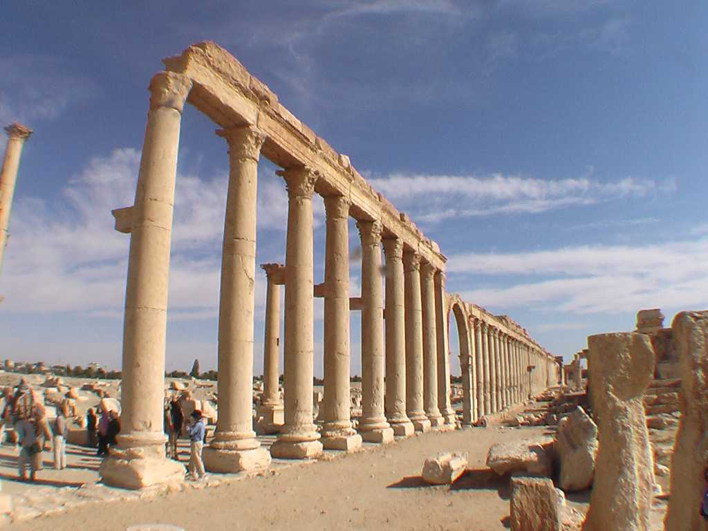
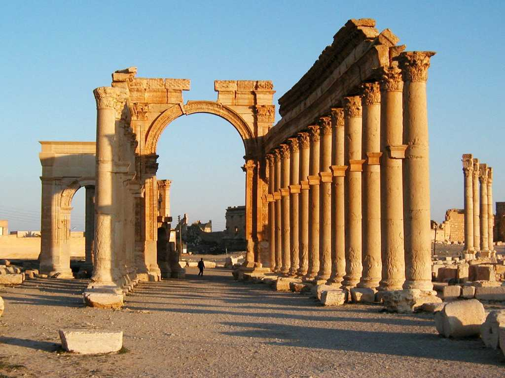
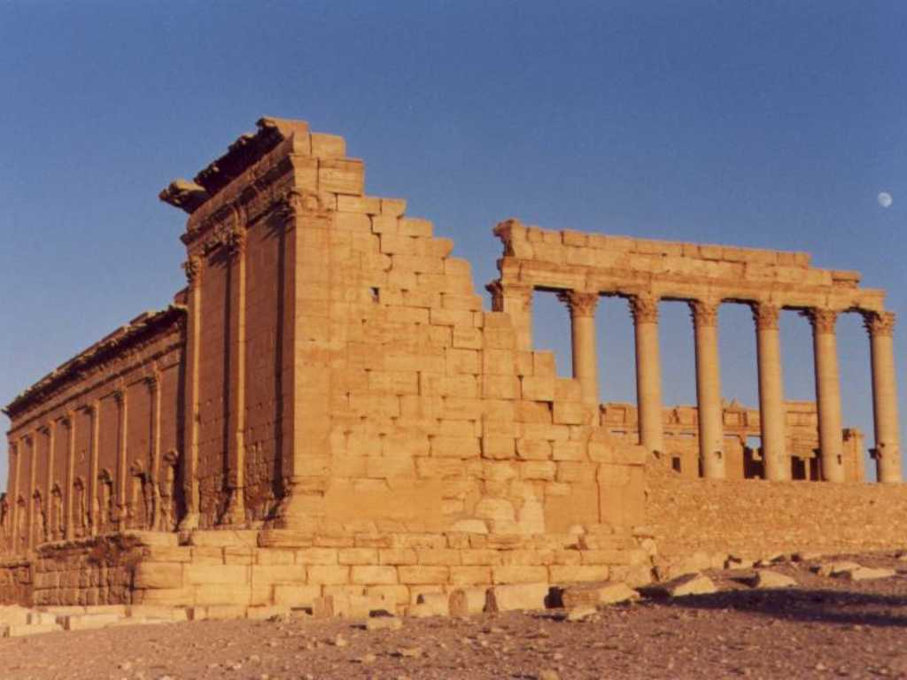
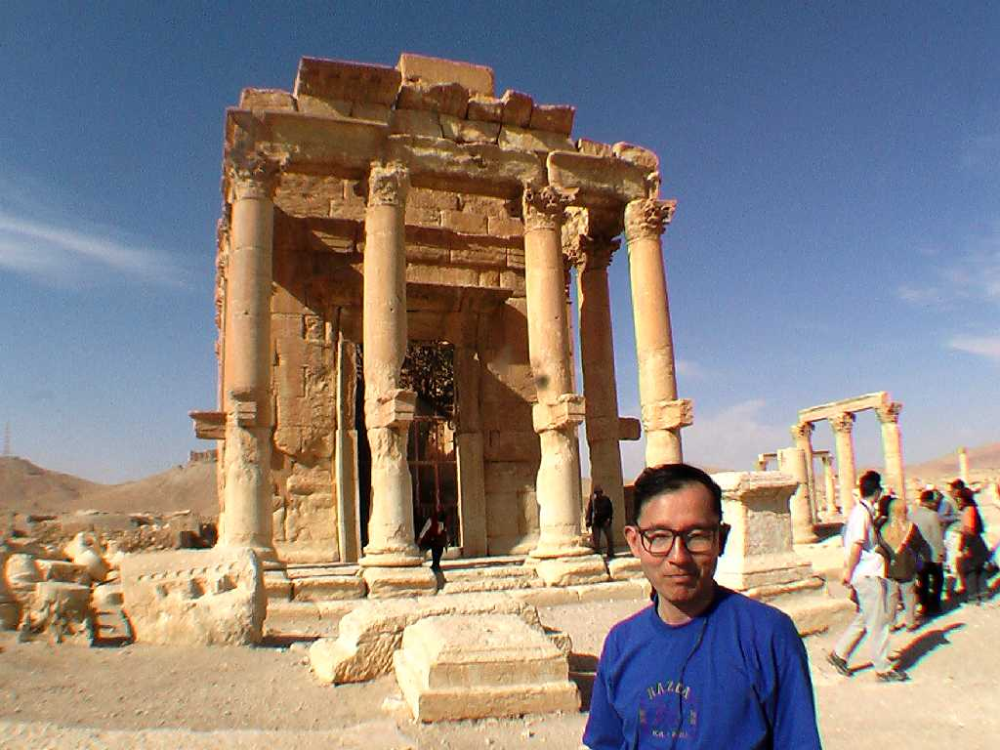

Palmyra Tadmor
トルコ遺跡の紀元前２０世紀の記録に都市名タドモル(アラビア語のナツメヤシ)として残っているがその後紀元前１世紀にシルクロードのオアシス都市として栄えた街で ナツメヤシに覆われたシルクロードの楽園と言われた 古代の人々は妖精の創った街と呼んでいた別名シルクロードのバラの中央通りは１.３ｋｍに渡り高さ１２ｍの列柱が３７５本建ち並びベル神殿とともに両側にはシルクロード交易の市場や娯楽施設の円形劇場跡がある

Monumental Arch
中央通りの入り口にある記念門でラクダに乗って見ると繁栄当時の状況が再現される ６ｋｍ四方に渡る遺跡群は世界で最も美しく大規模な遺跡のひとつと言われている

Temple of Bel
地元の神を祭ったベル神殿の天井レリーフは美しく探検家がヨーロッパに紹介したため大流行し多くの宮殿等の装飾に用いられた

November 15 2005 Palmyra